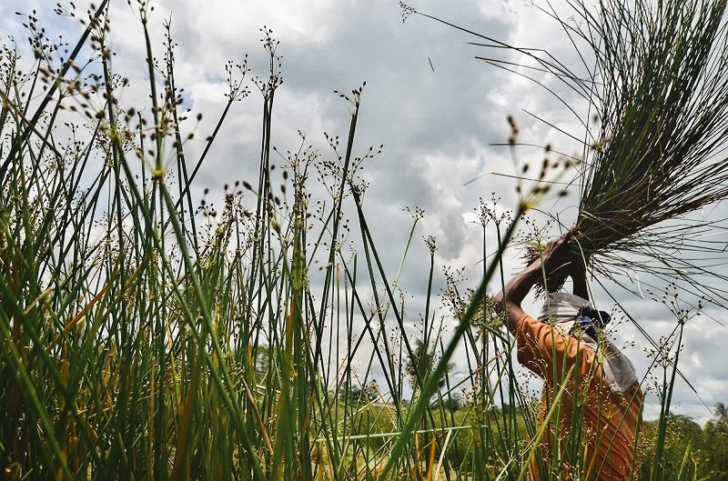

Mendong
Mendong adalah sejenis rerumputan yang kuat, halus dan panjang yang banyak ditemui di daerah Jawa Tengah. Mendong sering dikenal dengan purun tikus di daerah Kalimantan Selatan. Di Manado disebut juga dengan daun tikar. Mendong
memiliki batang berwarna hijau, tersusun rapat, dan cepat menjadi kaku serta terlihat seperti silinder memipih di bawah tangkai bunga. Batang tumbuh tegak, beruas panjang berongga, dan lentur serta memiliki tinggi mencapai 120
cm. Aneka kerajinan dengan bahan baku mendong yang berkembang dan diminati adalah tikar, sandal, kotak tisu dll.
Persiapan bahan mendong adalah ketika batang mendong yang hijau berubah menjadi kecoklatan mendong akan dipanen. Setelah dipotong mendong digosok dengan abu agar menjadi kering, alot dan berwarna putih. Selanjutnya di jemur
dibawah sinar matahari. Kemudian masuk ke tahap “nglemeni” yaitu menghilangkan daun - daun yang ada pada mendong.

Sumber: www.jurnalasia.com